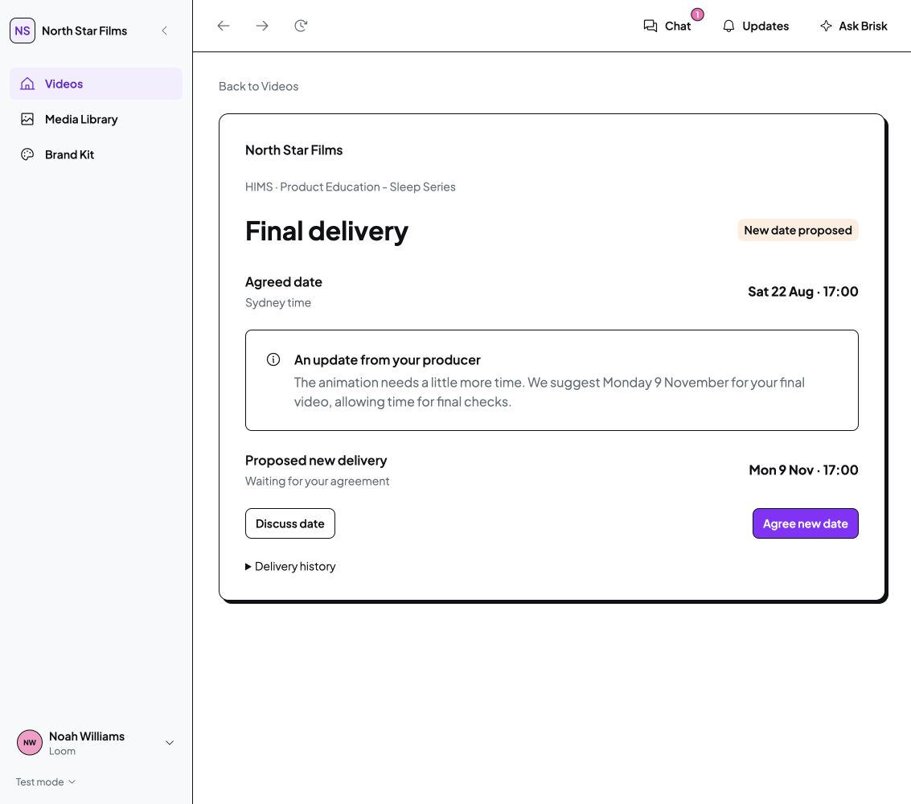
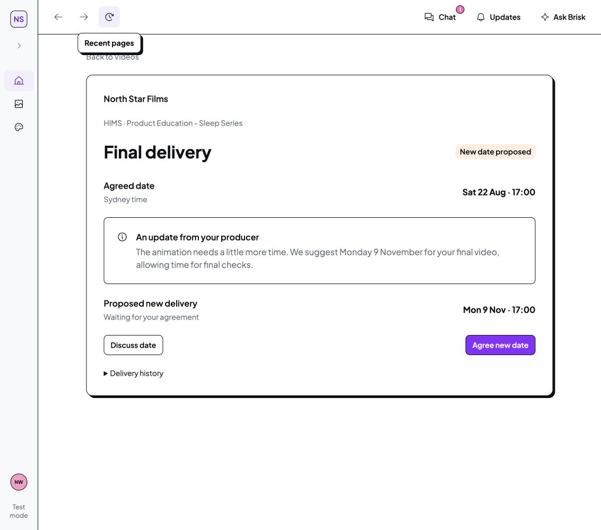
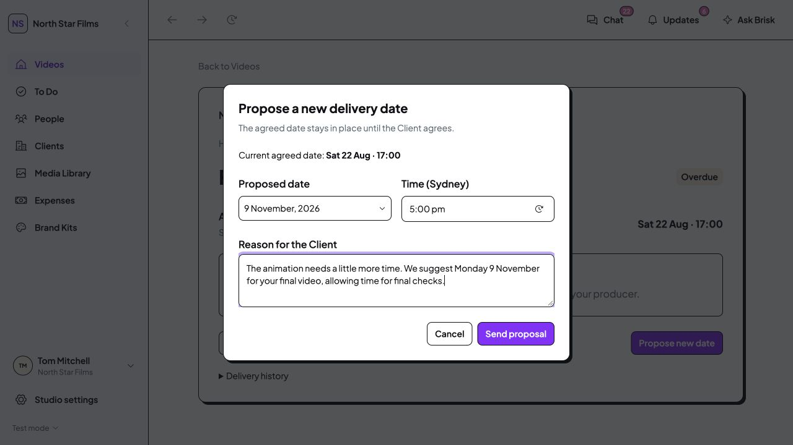
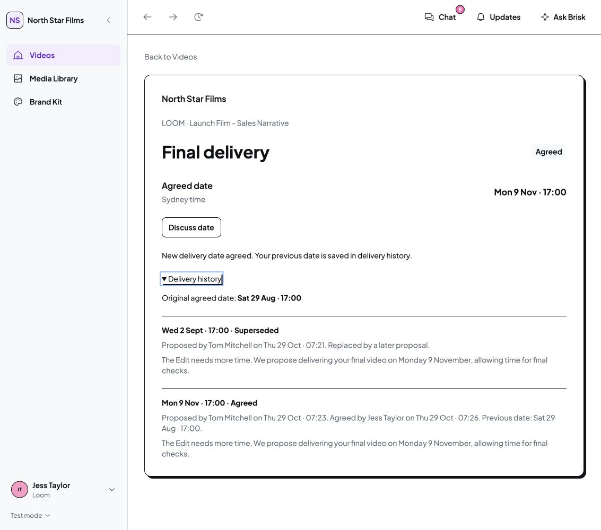
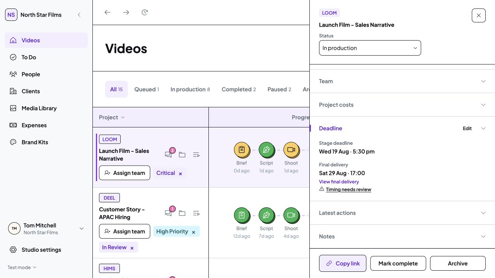
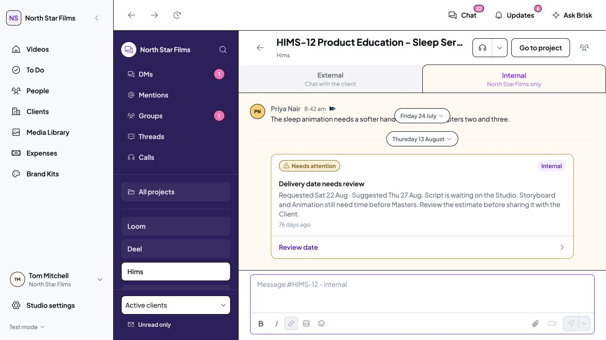
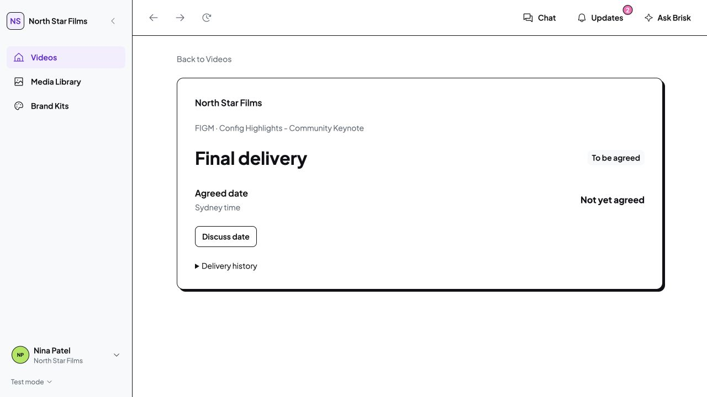

Final app: Client proposal
Customer · 1440 × 1000 · Isolated demo
Final app: narrower desktop
Customer · 1133 × 1000 · Isolated demo

Final app: collapsed navigation
Customer · 1133 × 1000 · Isolated demo

Producer: propose a date
Studio Staff · 1440 × 1000 · Isolated demo

Client agreement and retained history
Customer · 1133 × 1000 · Isolated demo

Deadline drawer: old date stays while pending
Studio Staff · 1133 × 1000 · Isolated demo

Production risk reviewed internally first
Studio Staff · 1440 × 1000 · Isolated demo

Accepted Freelancer: read only
Studio Freelancer · 1133 × 1000 · Isolated demo

Verification and remaining scope
Type-check and local route checks passed. Desktop interactions were checked at 1440 and 1133 pixels, including proposal cancellation, superseding a proposal, Client agreement, history, independent saved-state loading, Deadline links, Client entry and Freelancer restrictions.
One cached in-app-browser reload showed a blank page; a fresh review URL loaded the same saved agreement without resetting data. This local development loading issue remains recorded in the verification file.
Automatic turnaround calculations, Studio timing settings, live forecasts, emails and production persistence remain outside this delivery-agreement batch. The existing risk suggestions remain explicit prototype assessments. Mobile verification is deferred. Cross-tab stale-proposal rejection was source-reviewed; an adversarial simultaneous-action test was not performed.
No tests, production build, dependency installation, commit, push or external publication. Click any screenshot to enlarge it.
Source comparison · Screenshot provenance